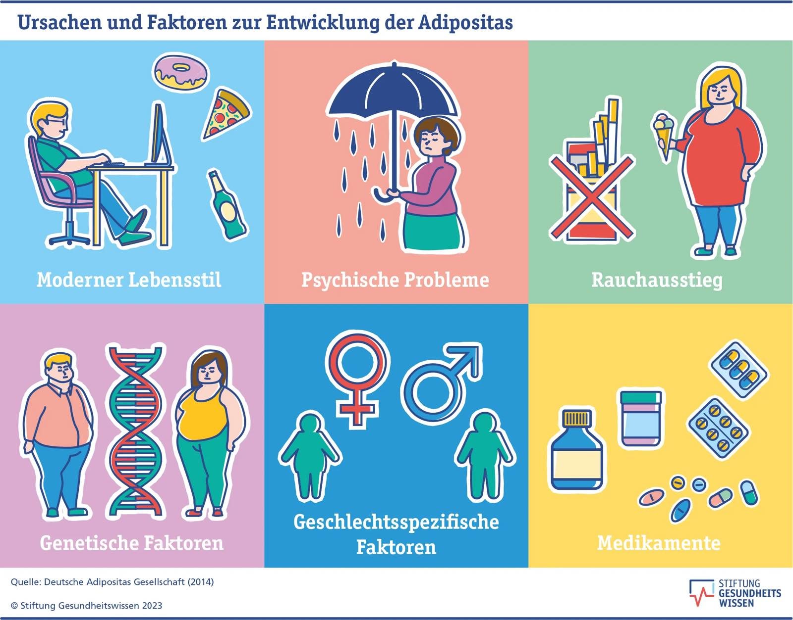
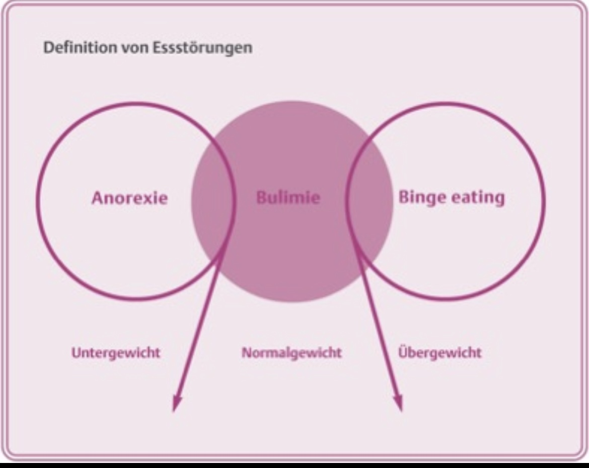

Eine häufige Folge ungesunder Ernährung ist Übergewicht. Es entsteht, wenn man über längere Zeit mehr Energie aufnimmt, als der Körper verbraucht. Die überschüssige Energie wird als Fett gespeichert.

Übergewicht erhöht das Risiko für viele Krankheiten, zum Beispiel Herz-Kreislauf-Erkrankungen, Diabetes Typ 2 und Probleme mit den Gelenken.
Ungesunde Ernährung wirkt sich auf den ganzen Körper aus. Man fühlt sich schneller müde, kann sich schlechter konzentrieren und ist weniger leistungsfähig.
Falsches Essverhalten kann auch zu Essstörungen führen. Dazu gehören zum Beispiel Magersucht und Bulimie. Diese Krankheiten haben oft sowohl körperliche als auch psychische Ursachen.

Essstörungen sind sehr ernst und können lebensgefährlich sein. Betroffene brauchen Hilfe von Ärzten und Fachleuten.